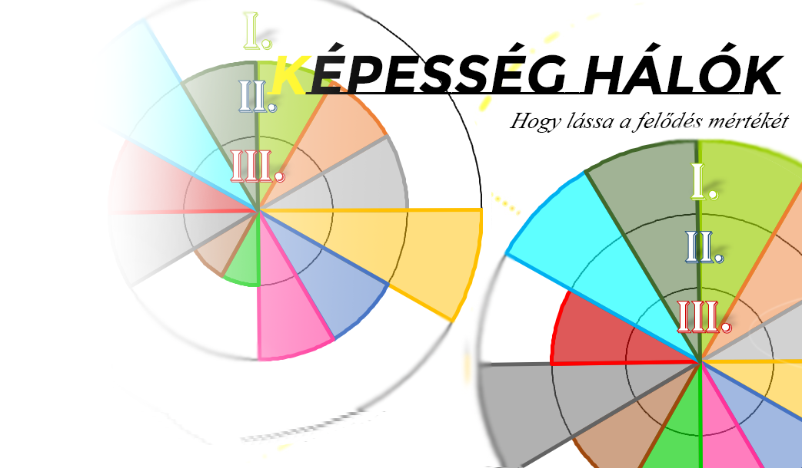

Képességhálók és Célmeghatározások
Az szakmai anyag könnyed összerakása egyben egy interaktív képességdiagrammot is készít önnek! Lássa a fejlődést időszakról időszakra.
Az Értékek program egy intelligens kérdőív és értékelő rendszer. Irassa meg negyed, fél vagy éves értékeléseit programunkkal!
Jellemzések és értékelések automatizációja. Az ön ideje fontos, a mi szakmai anyagunk pedig részletes.
A kötelező szakmai anyag megírása eztán alapulhat egy letsztult és jól átlátható formára.
Az szakmai anyag könnyed összerakása egyben egy interaktív képességdiagrammot is készít önnek! Lássa a fejlődést időszakról időszakra.
Programunk több fejlesztő osztályban leteszelt, jól működő értékelő rendszer. Kattintson a "Verziók" "Letöltések" fülre és próbálja ki, ingyenes demó verziónkat!
Fő támogatónk a Kerek Világ Alapítvány.